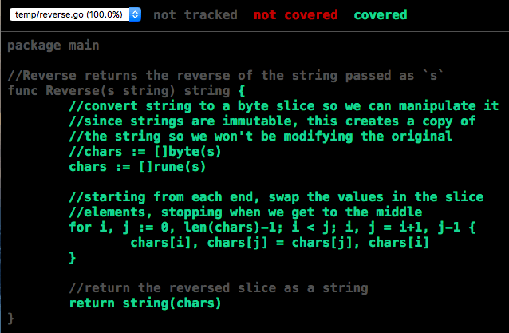

Anyone can learn to hack together an information system that works for one version, but building a system that continues to run reliably over many releases and years requires learning not only a good architecture, but also the discipline of automated testing. In fact, the thing that separates professional from amateur developers the most is a commitment to writing automated tests for their features.
As your project grows in size and complexity, a suite of automated tests will help you ensure that small bug fixes or changes made for new features don't break your existing functionality. If your tests are complete (i.e., they exercise all of your code paths by test both success and failure cases), you can make changes and release new versions with confidence.
If you do it right, your test code will actually be longer than your feature code. For example, the SQLite library has 730 times more automated test code than feature code. They can fix bugs or make changes to their most core code yet know within a few minutes that the features their users depend upon are still functioning as expected. Before releasing a new version, they run all of their tests on multiple platforms, with multiple build configurations. Doing all that testing manually would be unthinkable.
What are Automated Tests?
An automated test is just another program that calls your feature code, passing various kinds of inputs, and testing the outputs to ensure they are what you expect them to be. These programs should test both valid and invalid inputs, and if possible, trigger unusual error conditions to ensure that the feature code handles them properly.
Ideally, your tests should invoke every line of your feature code at some point. The percentage of lines invoked is known as your code coverage, and it should be as high as possible. In some cases you can achieve 100%, but in others there will be code paths that are run only when very unexpected errors occur that your tests can't fabricate.
You can write automated tests in any language, but some languages offer specialized tools or environments for writing and running these tests. For example, Go defines a way to write automated tests that are automatically excluded from your compiled executable, but can be run at development time using their go test tool. This tool also provides code coverage analysis, showing you exactly which lines were exercised by your tests, and which were not. In the Node.js ecosystem, the tool mocha.js is often used to run tests.
Levels of Testing
We can write automated tests at several levels: individual functions or classes in isolation; groups of integrated components; or entire systems running like they will in production.
Unit Tests
The most common automated tests are those that test functions or classes in isolation. These are known as unit tests, as they are testing just one unit of the system at a time. These tests should be as exhaustive as possible, and cover all code paths.
These tests are often written in a data-driven style: you define multiple sets of input parameters and expected outputs, and then iteratively test each input/output pair. As you discover new possible input combinations, you just add those to the list, and the testing code automatically tests them. See below for an example of this in Go.
Integration Tests
Once you know that your system units are working in isolation, you then can test how they behave when they are integrated with other units into a sub-system. This is also where you test how your own units interact with code written by other people: for example, reusable libraries, database management systems, or the operating system. These are known as integration tests, as you are testing how your code units integrate with other code.
Integration tests are less about exhaustively testing input and outputs, and more about testing how units interact through a transaction flow. For example, a code module you write to manage user accounts in a DMBS (a user store) will expose several functions, and you will test those functions in isolation in your unit tests, but in your integration tests you will ensure that the functions work correctly together in a typical Create/Read/Update/Delete (CRUD) cycle. Your integration test would do the following:
- create a new record
- read the record and ensure it was saved correctly
- update the record
- read it again to make sure it was actually updated
- delete it
- ensure that you can no longer read it
Integration tests verify the dependencies between units, and thus can reveal errors that the unit tests miss. For example, if you added local caching to your user store to increase performance, but forgot to invalidate or patch the cache entry when the user record is updated, your integration test will catch it while your unit tests probably won't.
To run a test like this, your will naturally have to talk to the DBMS, but in many languages you can create a mock implementation of the DBMS so that your tests are easier to run. A mock implements the same interface as the DBMS client library, but uses a simple in-memory data store instead of talking to the actual database server. When using a mock, developers don't need to have the DBMS running locally in order to run the tests, and your tests aren't affected by data that might already be in the DBMS. Mocks also make it easier to trigger unusual runtime errors that might be impossible to trigger when using the actual DBMS, so they can help you achieve a higher code coverage ratio.
System Tests
Both unit and integration tests focus on one piece of your system at a time, but system tests are meant to test your entire system in a context similar to production. For example, a unit test for a web server handler function would just invoke the function directly, but a system test for a web server would actually start the server and it's dependencies (ephemeral and persistent DBMSs, message queues, etc.), and then send real HTTP requests to the server, evaluating the HTTP responses.
System tests can uncover problems that would occur only in a production environment. For example, a system test could uncover issues that occur if the network socket is closed before the entire request body is received, or while the response is being written.
System tests can also verify system-level features, such as automatically restarting a microservice instance when it fails, automatically failing-over to a backup system when the primary system goes down.
Stress Tests
The final type of automated tests to mention are stress tests. These are a bit different than the previous types of tests as they are not really about testing features, per se. Instead they are about testing how your system behaves under stressful conditions, such as a very high transaction load. Stress tests will determine how much your system can handle, and at what point it will fail without more resources.
Stress tests require a bit more in terms of test infrastructure. In order to mimic a high transaction load on a web server, you really need to have dozens of clients all making multiple requests to the server at the same time. Each client measures how long each request took to process, and the server monitors things like request queue size, CPU/memory usage, and DBMS query duration.
One you build a stress test infrastructure, you can run several tests with different system configurations and actually measure the results to see which configuration gives you the scalability you need for the least cost. Without this, you can only guess and hope.
Writing Tests in Go
Now that you know the distinctions between automated tests, let's see how we write unit tests in Go. Follow along in your own code editor. Start by creating a new directory within your $GOPATH/src/ directory, and creating a file named reverse.go within that directory. Then copy this function into it:
package main
//Reverse returns the reverse of the string passed as `s`
func Reverse(s string) string {
//convert string to a slice so we can manipulate it
//since strings are immutable, this creates a copy of
//the string so we won't be modifying the original
chars := []byte(s)
//starting from each end, swap the values in the slice
//elements, stopping when we get to the middle
for i, j := 0, len(chars)-1; i < j; i, j = i+1, j-1 {
chars[i], chars[j] = chars[j], chars[i]
}
//return the reversed slice as a string
return string(chars)
}If you were paying attention during the Go language tutorial, you'll probably spot a bug in the code above. If not, don't worry: our automated tests will soon uncover it.
Create another file named reverse_test.go in the same directory. Go treats files that end with _test as automated test files, so it won't compile these into your built executable, but it will run the tests within them when you invoke the go test tool.
Since we are writing a unit test for our Reverse() function, we will make the test data-driven. We will specify several pairs of input strings and expected output strings, and test each case to make sure we get what we expect. The cases should include not only common cases, but also unexpected ones such as an empty string for the input.
Add this code to your reverse_test.go file:
package main
import "testing"
func TestReverse(t *testing.T) {
cases := []struct {
input string
expectedOutput string
}{
{"", ""},
{"a", "a"},
{"ab", "ba"},
{"abc", "cba"},
{"abcd", "dcba"},
{"aibohphobia", "aibohphobia"},
}
for _, c := range cases {
if output := Reverse(c.input); output != c.expectedOutput {
t.Errorf("incorrect output for `%s`: expected `%s` but got `%s`", c.input, c.expectedOutput, output)
}
}
}All test functions must start with the word Test, and it's conventional to follow that with the name of the function you are testing. The test function must also accept only one parameter of type *testing.T, which is typically named t. This parameter gives you access to functions like t.Errorf() that let you report errors. If any of the error methods on the t parameter are called, the test fails.
The crazy-looking syntax at the top of the function is declaring and initializing a slice of anonymous structs, each of which will have two string fields: input and expectedOutput. Anonymous structs are like anonymous functions—they are declared in-line with no name. We could have declared a separate struct type and then referred to it like so:
//same effect as above, this just declares
//the struct type first with a name and then
//uses it when creating the slice of structs
type testcase struct {
input string
expectedOutput string
}
cases := []testcase{ /* initializer */ }But since we never need to refer to that struct type anywhere else in the function, it's simpler to just declare it in-line as an anonymous struct.
The initializer expression that follows the anonymous struct definition populates the slice of structs with several input and expected output pairs. We start with the unexpected case of an empty string, which should result in another empty string. Then we try various string lengths to make sure our algorithm works for both even and odd-numbered lengths. And finally we test a palindrome, which is a word spelled the same forwards and backwards.
After declaring and initializing the slice of structs, we just iterate over the slice, passing the input field of each struct to our Reverse() function, and verifying that the output matches the expectedOutput field. If they don't match, we report an error using t.Errorf().
The message you pass to t.Errorf() should provide enough information for a developer to know which case failed and why. Keep in mind that the test may fail years after you wrote it due to a careless bug fix by another developer, so be as descriptive as possible.
To run this test, go to your terminal window, make sure you are in the directory containing the reverse.go and reverse_test.go files, and then execute this command:
go testIt should pass, as we haven't yet included a test case that will reveal our latent bug. Let's do that now.
So far all of our test cases use characters in the ASCII range, and since Go uses the UTF-8 encoding scheme for strings, each character takes up only one byte. But what would happen if we tried a string containing characters beyond the ASCII range that require multiple bytes in UTF-8?
Since we built this unit test to be data-driven, adding another case to test characters beyond the ASCII range is a snap. Add this additional case to the slice-of-structs initializer:
cases := []struct {
input string
expectedOutput string
}{
//...existing cases...
{"Hello, 世界", "界世 ,olleH"},
}And now run go test again. This time you should see a failure:
--- FAIL: TestReverse (0.00s)
reverse_test.go:21: incorrect output for `Hello, 世界`: expected `界世 ,olleH` but got `??疸? ,olleH`
FAIL
exit status 1Why is this case failing? Let's look at the Reverse function again:
package main
//Reverse returns the reverse of the string passed as `s`
func Reverse(s string) string {
//convert string to a slice so we can manipulate it
//since strings are immutable, this creates a copy of
//the string so we won't be modifying the original
chars := []byte(s)
//starting from each end, swap the values in the slice
//elements, stopping when we get to the middle
for i, j := 0, len(chars)-1; i < j; i, j = i+1, j-1 {
chars[i], chars[j] = chars[j], chars[i]
}
//return the reversed slice as a string
return string(chars)
}See the problem? The first executable line of the function converts the input string in a slice of bytes, and then we manipulate those bytes as if each one is a complete character. But Go uses UTF-8 encoding for strings, so a character may consume anywhere from one to four bytes depending on its Unicode value. Thankfully, Go allows us to convert strings not only into a slice of bytes, but also a slice of runes, which is their term for a complete Unicode character.
Fix your Reverse() function by converting the input parameter s to a slice of runes instead of a slice of bytes, like so:
chars := []rune(s)And now go back to your terminal and re-run your tests using go test. They should now all pass.
Determining Code Coverage
As noted earlier, your unit tests should exercise as many lines of your feature code as possible. The ratio of lines exercised to total lines is known as your test coverage, and you should strive to be as close to 100% as possible.
Go makes it really easy to determine your coverage—just add the -cover flag to the go test command:
go test -coverSince our test exercises every line of our Reverse() function, we have 100% test coverage!
Go can also show you exactly what lines were and were not executed by your tests. Use these commands:
# run tests and capture coverage details
go test -coverprofile=coverage.out
# generate HTML report showing lines run and not run
go tool cover -html=coverage.outThis will open a web browser showing you the source files that were tested. Lines that were executed by your tests will be green, and those that were not will be red. If your feature code is in multiple source files, you can use the drop-down at the top left to switch between them.

Integration Tests in Go
The example above was a unit test, so we wrote it to be data-driven and exhaustive. As noted earlier, integration tests are more about testing a series of calls, such as a typical CRUD cycle, to ensure that they are working correctly together. And if those calls interact with external components such as a DBMS, we often try to use a mock implementation of the DBMS client library so that our tests don't require a running instance of the DBMS.
Go's static typing makes it difficult to build mocks, unless the DBMS client library defines its API as a Go interface. An interface is a type that can be implemented by multiple structs in multiple packages, including a mock implementation that we build and use for automated testing.
Unfortunately, most DBMS client packages do not define their APIs as an interface. Instead, they just define structs and functions, which can't be implemented transparently by a mock. This is an architectural flaw that I hope will be remedied in future versions of these packages, but for now we have to deal with it.
One approach is to define your own interface to encapsulate a "store" for your model objects. This interface would define various functions for finding, inserting, updating, and deleting models in the data store. For example, an interface for managing a store of "messages" might look like this:
package "messages"
type Store interface {
func Insert(newMessage *NewMessage) (*Message, error)
func Get(id bson.ObjectId) (*Message, error)
func Find(q *Query) ([]*Message, error)
func Update(message *Message) error
func Delete(id bson.ObjectId) error
}You then build two implementations of this interface: one backed by your chosen DBMS that you use for system tests and production; and one backed by a simple in-memory data structure that you use for integration tests. The in-memory version can also support additional functions that trigger unexpected runtime errors, so that you can test your error handling code and achieve 100% coverage.
For more information on Go interfaces, see Go By Example: Interfaces and the Interfaces section of Effective Go.
Test-Driven and Behavior-Driven Development
Organizations that take automated testing seriously often practice what is known as test-driven development (TDD). With this approach, developers write their automated tests first based on the specifications, and then implement their features by adding only the code necessary to make the tests pass. This is the reverse of how it's normally done, but TDD proponents argue that implementing tests after features tends to have two detrimental effects:
- Developers often get carried away when implementing features, adding more functionality and options than is required by the specifications, which just creates more opportunities for bugs and security vulnerabilities.
- Since writing software typically takes longer than one expects, especially if developers add unnecessary features, waiting until the end to write tests results in rushed, weak, and incomplete tests.
TDD proponents argue that their approach leads to faster development cycles and more reliable software. This enables organizations to respond more quickly to rapidly changing contexts without destabilizing their systems in the process.
Organizations that follow a TDD process often subscribe to behavior-driven development (BDD) as well, which attempts to bring the language used in the requirements and functional specifications into the automated tests. BDD testing frameworks allow you to write tests that look almost like English sentences:
//JavaScript test using popular mocha.js and chai.js frameworks
describe("reverse", function() {
it("should reverse strings", function() {
reverse("hello").should.equal("olleh");
});
it("should handle high Unicode characters", function() {
reverse("Hello, 世界").should.equal("界世 ,olleH");
});
it("should return an empty string for an empty string", function() {
reverse("").should.equal("");
});
it("should return null for null", function() {
reverse(null).should.equal(null);
});
//etc...
});BDD works better in dynamically-typed languages like JavaScript than it does in statically-typed languages, but the Gingko and Gomega frameworks provide an implementation of BDD for Go that works well, albeit with a little clumsier syntax. Here's what a similar BDD-style test would look like using Ginko and Gomega:
var _ = Describe("reverse", func() {
It("should reverse strings", func() {
Expect(Reverse("hello")).To(Equal("olleh"))
})
It("should handle high Unicode characters", func() {
Expect(Reverse("Hello, 世界")).To(Equal("界世 ,olleH"))
})
//etc...
})The key with TDD and BDD is to not let perfection become the enemy of good. It's better to crank out a suite of simple unit tests like those described above than to get caught up in arguments about proper TDD methods and BDD styles. Use the TDD methods that make the most sense for your organization and context, and don't worry about the rest. Use BDD if it makes sense to you and your team, or just write more straightforward tests like those described above. Ultimately, your job is to help your organization meet its objectives, and you should use the methods and styles that best help you get that job done.
Continuous Integration Testing
All of these automated tests are great, but only if you remember to run them! Ideally, every developer on the team should run a suite of automated tests before committing changes to the repo, but we all know that sometimes they will forget to to do it. That's why many development teams use a continuous integration testing server to run all of the tests every time commits are pushed the central repo.